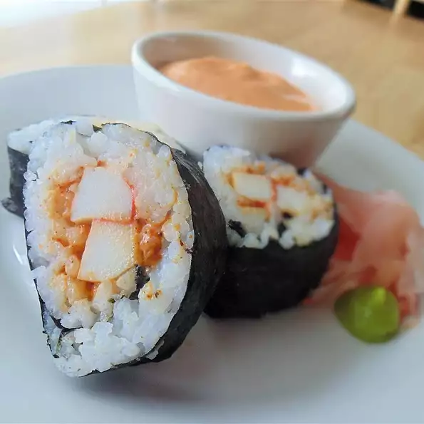

Spicy Sushi Roll

Delicious Spicy Rolls
The following is a basic spicy sushi roll, readily suitable for either crab or tuna. Different people will be suited to different degrees of spiciness for the sauce, so you may want to adjust proportions accordingly to your liking. Final product will be cool and slightly sweet at first, with a tight, hot afterbite following, and then linger for a while after with a duller burning, flavorful taste.
Ingredients
- 1/4 cup mayonnaise
- 1 tablespoon chile sauce
- 1 1/2 teaspoons togarashi (Japanese seven spice)
- 1 teaspoon prepared wasabi
- 1 teaspoon chili powder
- 1 teaspoon paprika
- 3 (3 ounce) fillets imitation crabmeat, cut into 1 1/2-inch pieces
- 3 sheets nori (dry seaweed)
Steps
- Mix mayonnaise, chile sauce, togarashi, wasabi, chili powder, and paprika together in a bowl; fold imitation crabmeat until evenly coated.
- Spread rice in an even layer across each nori sheet.
- Spoon a layer of crabmeat mixture in a row along the top edge of each nori sheet.
- Roll nori sheet around the crabmeat mixture filling, starting on the filling side until completely wrapped.
- Cut each roll into 8 equal pieces and serve.